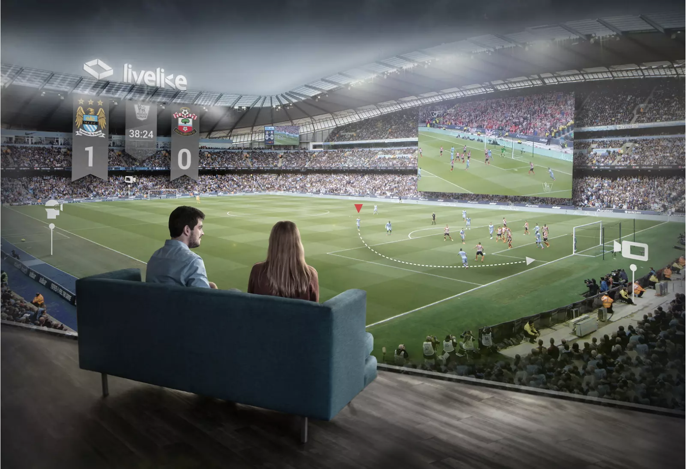

About WeR
The main intention with this app is to bridge the gap between live VR broadcasting and communication platform. The team imagines a perfect game day as a day out with friends watching the game from best possible angle and discuss the happenings on the go. Through the app, they intend to deliver similar experience at an off-location. This would allow people to watch their favorite games with their friends without having the constraint of being in the same city or country for that matter. The app would essentially enable users to join a game room or customize their own game room to be shared with like-minded people and watch the 360-degree live broadcast with an added feature of conference call with the participants of game room. The app will have added functionalities of switching the view, as if they were switching their seats in the middle of the game and get live stats on the VR screen if requested.
The user would also have option to go back in time and see the past footage of the game and share some highlights with their friends. The idea felt ambitious at first but after some in-depth research, the team found out that Oculus VR and Madame Tussauds have been deploying similar products in bits and pieces. There are also some use cases of 360-degree live news broadcasting last year during the solar eclipse. However, this app intends to provide multiple features on the same platform by integrating VR technology with VoIP services.